Des Rotoplo Fires à Codéine : ce qu'il y a derrière les dates.
Saint-Erblon • Mayenne — archives du groupe
L'Interview des Vingt Ans
Des questions posées aux anciens, et les réponses que les archives éclairent.
À l'occasion de la mise en ligne des archives, l'équipe a ressorti les cartons : le boîtier du CD Jar (1998), les affiches, les photos de 1993, et l'historique écrit à l'époque. Les quatre du départ — Régis, Tanguy, Tony et Loran — ont accepté de remonter le fil.
À la base, quatre gamins et aucun instrument. Comment ça commence ?
À la base, un quatuor « les rotoplo fires », qui constitue le tiers de la base de Jar. Régis à la batterie — au son d'une boîte de K7 en bois percutée avec énergie —, Tanguy chanteur et tombeur héros à s'en rouler par terre, Loran à la guitare électrique — à une corde — et Tony au synthé smooby. Bref, tout pour réussir...
Loran, fondateur
Et il n'y a jamais eu d'instruments « normaux » au début ?
Pas au sens propre, non. On était implantés à Saint-Erblon, en Mayenne, pas loin de Rennes et Angers, avec la vague alternative française en bande-son — berrus, Parabellum, OTH... On ne tardera pas à changer de nom, en privilégiant naturellement la chanson à texte : ce sera Desastrax. Le temps d'enregistrer une K7 à quatre titres sur un magnéto d'époque, et le groupe se dissout en 1988.
Tony, fondateur
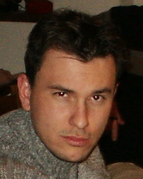
Régis — la batterie
Le sous-sol, c'était quoi exactement ?
Notre local. Le sous-sol de la maison familiale, à Saint-Erblon. Les amplis en bas, les parents devant la télévision à l'étage. Tout remontait par le plancher. C'est cette acoustique brute qu'on entend encore sur les enregistrements — et c'est là que le son du groupe s'est fait tout seul.
Régis, fondateur1991
1991, le groupe repart. Qu'est-ce qui change ?
On se retrouvait de temps à autre pour jouer, tant bien que mal — le début de la galère — jusqu'à l'arrivée de Gilles, qui s'investit immédiatement dans la basse. Régis passe à la batterie, Loran à la guitare, Tony au chant : le progrès s'en ressent. « Explicit » est né, en passant par Soul Famous Carpet.
Tony, fondateur
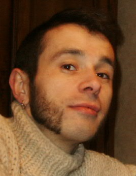
Loran — la guitare1993
Premier concert : Château-Gontier, 4 septembre 1993. Tu t'en souviens ?
L'explosion rock de l'Ouest, Angers notamment, nous poussait à créer vite. Les compos défilaient, Jérôme avait rejoint le quatuor, et les influences se multipliaient : Fugazi, Sonic Youth, les Thugs, les Skippies... et l'incontournable Nirvana. Le concert a été suivi d'une bonne prestation — ce qui, avec du recul, a fait d'Explicit autre chose : No Mug.
Régis, fondateur
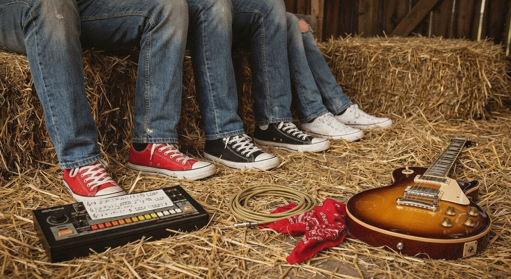
Le sous-sol, Saint-Erblon1996
Puis Helium, en 1996. Le virage hardcore ?
Oui : le groupe prend le trait de la fusion hardcore américaine, avec la filiation Dischord — Fugazi, Quicksand — et tout le grunge qui déferlait. Les guitares se sont durcies, le tempo s'est tendu.
Loran, fondateur1998
1998 : Jar, le CD. Comment on enregistre un disque quand on répète dans un sous-sol ?
Jérôme quitte la formation et laisse la place à Jean-Marie et Florent — c'est là que le groupe atteint son apogée et enregistre un CD cinq titres en studio. Cinq titres : Little Shit, Endfeels, Quiet, Self Made Women, Shelter for Anger. Enregistré chez Nono, au studio Panoramix, à Saint-Sauveur-de-Flée ; les répètes, elles, se faisaient aux Courans, à Longuefuye.
Tanguy, fondateur
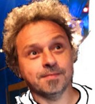
Tanguy — le chant1999
Fin 1999, tout s'arrête. Deux ans de silence.
Le groupe se sépare et cesse toute activité pendant deux ans. Certains, en manque de musique, intègrent alors accessoirement d'autres groupes — Jean-Marie rejoint Hippy Groovy and the Stylee Mens. Ce n'était pas une fin : juste une pause qu'on ne s'était pas avouée.
Régis, fondateur2002
2002 : Codéine, sans toi. Comment on vit ça ?
On remet ça sans Tony, l'un des piliers du groupe, sur de nouvelles influences — Incubus, Sevendust — et avec un petit nouveau au chant : Jean-François, que tout le monde appelle Jef. On monte aussi une association, Tous Azic'Muts, avec Hippy Groovy : de la musique, mais aussi une structure pour la défendre.
Loran, fondateur
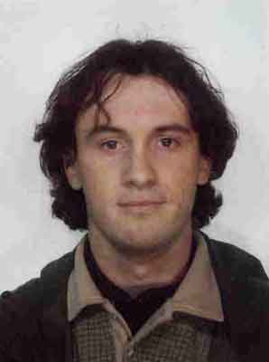
Tony — le synthé2004
Et la dernière ligne droite, jusqu'en 2004 ?
Décembre 2003, c'est Gilles qui doit quitter le groupe, pour raisons professionnelles. Le reste continue, avec un style plus métal et Florent qui passe à sept cordes. On joue encore à Rennes, au Campus Kerlan, en janvier 2004, puis à Saint-Michel-de-la-Röe pour Aperoconcert, en septembre. Aujourd'hui, l'histoire continue avec des périodes plus ou moins creuses, au rythme de la situation professionnelle de chacun...
Régis, fondateur2004
2004 : après le départ de Jef, que devient le groupe ?
Après le départ de Jean-François, Alex est arrivé au chant et à la guitare. Le groupe a pris le nom de Wöw, avec Régis, Jean-Marie (JeanJean) et Florent, l'objectif étant de prendre une direction plus professionnelle. Ils ont continué à faire des concerts dans la région, jusqu'à la disparition du groupe en 2010.
Tony, fondateur
« Bref, tout pour réussir... »
L'historique du groupe, à propos des Rotoplo Fires
LE SOUS-SOL
Le local, la légende, et le plancher qui n'a jamais rien isolé.
LES AMPLIS EN BAS, LES PARENTS À L'ÉTAGE
Les répétitions se tenaient dans le sous-sol de la maison familiale, à Saint-Erblon : les amplis et la batterie en bas, les parents devant la télévision à l'étage. Le son montait à travers le plancher — isolation phonique inexistante, acoustique brute incomparable.
C'est ce lieu qui a façonné le son du groupe, et il reste attaché à toutes les périodes : de Desastrax à Jar, en passant par Explicit et No Mug.
LES ANECDOTES
Ce que les archives racontent entre les lignes.
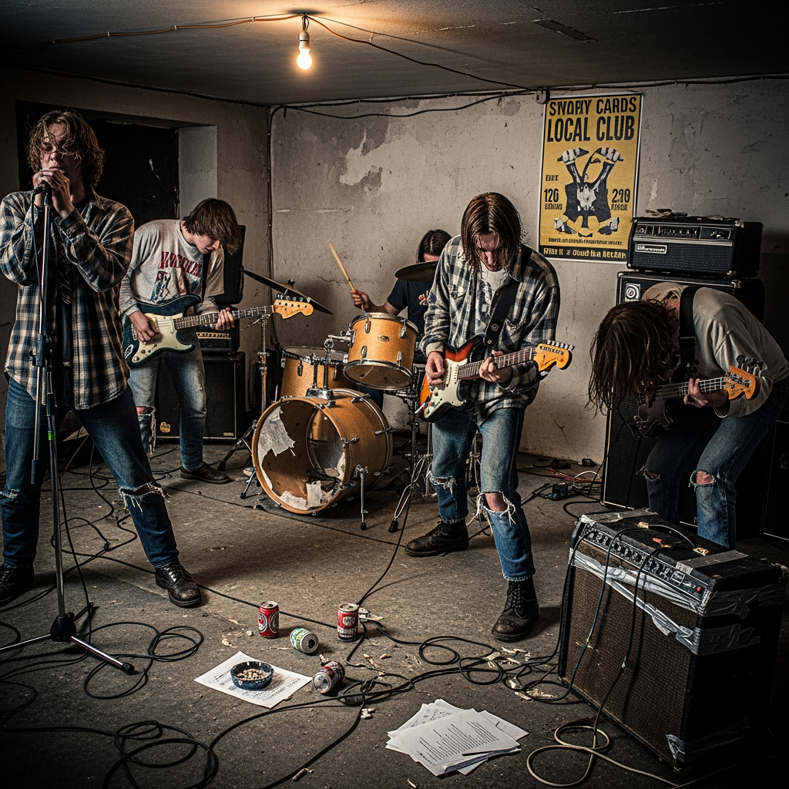
La boîte de K7 en bois
Desastrax • 1988
La première batterie du groupe : une boîte de K7 en bois, percutée avec énergie par Régis. La guitare de Loran, elle, n'avait qu'une corde. Tout pour réussir.
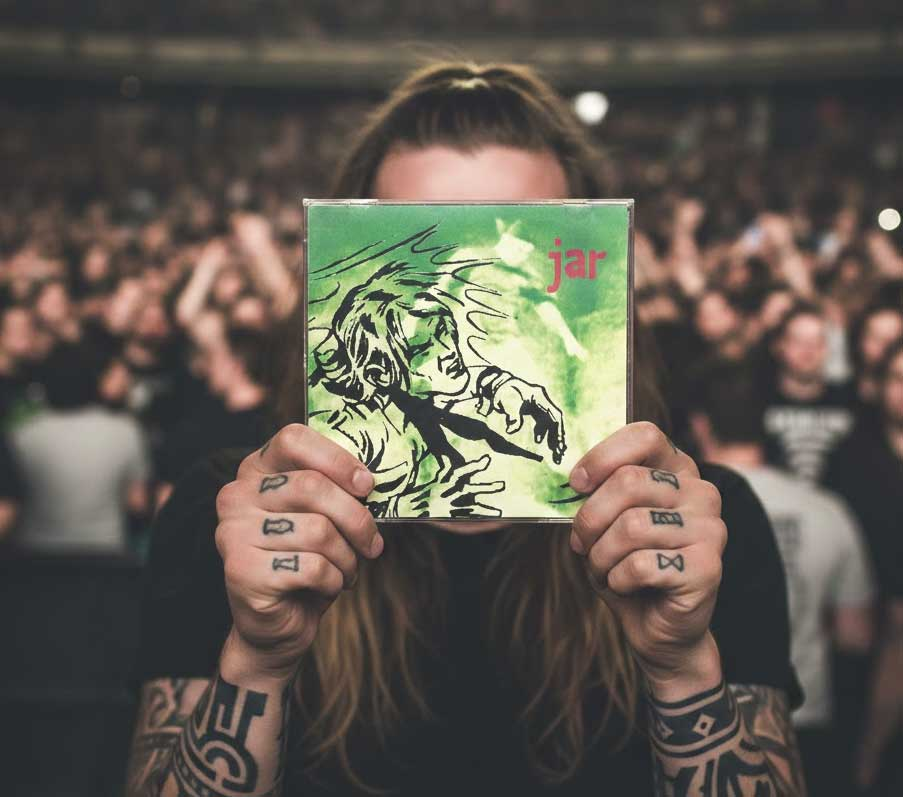
Jar, chez Nono
1998 • Studio Panoramix
Le CD cinq titres enregistré au studio Panoramix, chez Nono, à Saint-Sauveur-de-Flée. Les répétitions, elles, se tenaient aux Courans, à Longuefuye. Le boîtier porte les deux adresses comme des coordonnées de jeunesse.
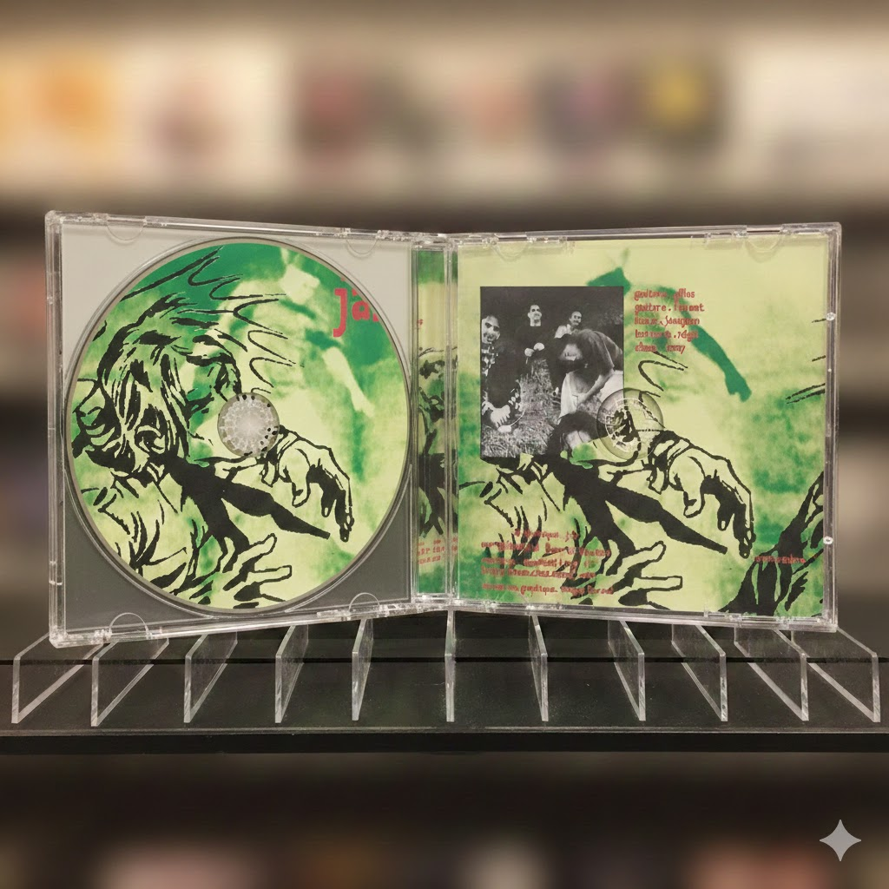
Les remerciements du boîtier
1998 • Le disque
Nono, Tanguy, Mickaël, les parents, Jérome, Christophe, Cédric, Saint Erblon, Novembre, Daniel du palais, Cavirok de Château-Gontier, le FJT, Aline & Jean-Marie, les Tomyknockers, l'abbé Frock — « et tous les autres qui se reconnaîtront ».
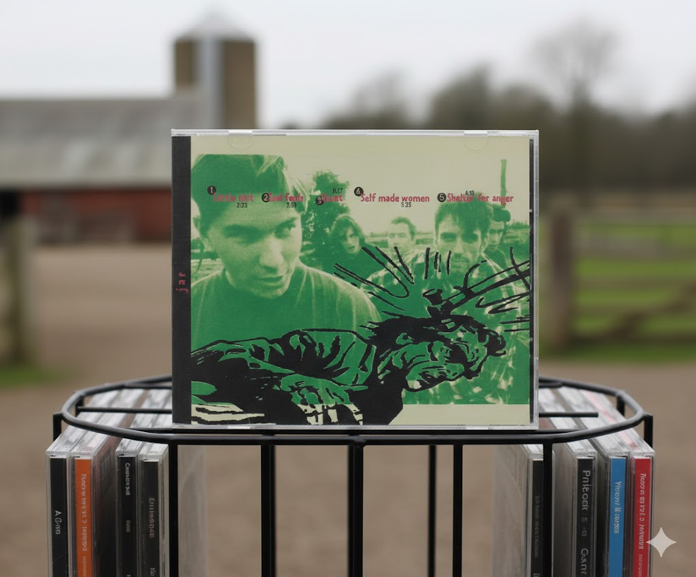
Sur la pochette
Design • Photo
Conception graphique : Tanguy Ferrand. Photos : Loran Ferrand. Paroles et musique : le groupe. Contact : Mickaël Lairy. Un disque fait entièrement à la main, par ceux qui jouaient dessus.
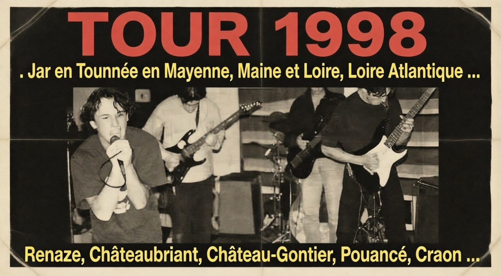
Tous Azic'Muts
2002 • L'association
Début 2002, Codéine et Hippy Groovy créent l'association Tous Azic'Muts pour le développement des musiques actuelles. Premier concert le 8 juin 2002 à Bourg-l'Évêque, en compagnie des Allumés du Bocal.
Deux ans de silence
1999 • 2002
Fin 1999, le groupe se sépare et cesse toute activité pendant deux ans. Certains intègrent accessoirement d'autres formations — puis début 2002, tout le monde remet ça sous le nom de Codéine.
LES NOMS DU GROUPE
Dans l'ordre, avec les années que les archives permettent de dater.
Avant 1988
Les Rotoplo Fires
Le quatuor d'origine, sans instruments « normaux » : guitare à une corde, boîte de K7 en bois, synthé smooby.
1988
Desastrax
La chanson à texte, une K7 quatre titres sur un magnéto d'époque — puis la dissolution.
Fin 80s
Soul Famous Carpet
Le nom de passage, avant qu'Explicit ne prenne la suite.
1991
Explicit
Le retour : Gilles à la basse, Régis à la batterie, Loran à la guitare, Tony au chant.
1993
No Mug
Premier concert à Château-Gontier le 4 septembre 1993 ; Jérôme rejoint la formation.
1996
Helium
La fusion hardcore américaine, héritée de Fugazi, Quicksand et du grunge.
1998
Jar
Jean-Marie et Florent rejoignent, le groupe atteint son apogée et enregistre son CD 5 titres.
2002
Codeine
Sans Tony, avec Jean-François (Jef) au chant, et l'association Tous Azic'Muts.
2004
Wöw
Jean-François s'en va, Alex arrive au chant et à la guitare : le groupe prend le nom de Wöw, avec Régis, Jean-Marie et Florent, et vise une direction plus professionnelle. Il joue encore dans la région jusqu'en 2010.
2022
Crumble Head
Le nom que nous nous sommes donné après une soirée, pour une reconstruction du groupe — Régis, Loran, Gilles et Tony. Des morceaux ont commencé à naître en 2022, comme ça, pour le plaisir, puis quelques autres : rien de concret pour le moment.
CEUX QUI ONT TENU LES INSTRUMENTS
Toutes les formations, du sous-sol aux dernières scènes.
Régis
Batterie
Fondateur. La batterie depuis les débuts — la boîte de K7 en bois percutée, puis une petite boîte à rythmes électronique en 1990, et la vraie batterie à partir de 1991 — jusqu'en 2010.
Tanguy
Chant, puis graphisme
Fondateur. Le chanteur des débuts — du temps de Desastrax —, puis les pochettes, dont celle de Jar.
Loran
Guitare
Fondateur. La guitare des débuts, puis guitariste et photographe du groupe.
Tony
Synthé, puis Chant
Fondateur. Au synthé smooby chez Desastrax, chanteur d'Explicit à Jar. Quitte le groupe en 2002.
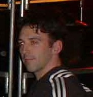
Gilles
Basse, puis Guitare
Arrivé en 1991 : la basse jusqu'en 1998, la guitare jusqu'en décembre 2003.
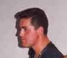
Jérome
Guitare
La seconde guitare d'Explicit, No Mug et Helium, de 1993 à 1998.
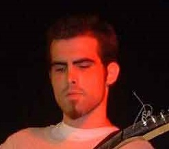
Florent
Guitare
Arrivé en 1998, passé à sept cordes à partir de 2003.
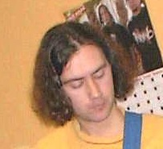
Jean-Marie
Basse — « JeanJean »
La basse de Jar et de Codéine, à partir de 1998.
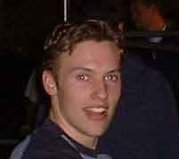
Jean-François
Chant — « Jef »
Le « petit nouveau » de 2002, au chant de Codéine.
À L'ÉCRAN
Le teaser des archives : scènes, répétitions et souvenirs.
Une photo, une cassette, une affiche, un ticket de concert, un nom oublié ?
Les archives se construisent avec tout le monde. Si tu as quelque chose qui traîne dans un carton —
une K7 de répétition, un polaroïd de concert, un article de presse, une anecdote —
envoie-le : c'est comme ça que les vingt prochaines années seront racontées.